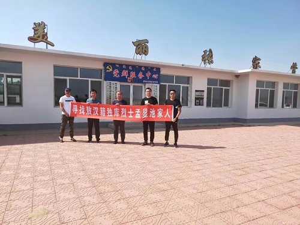

为了更好地宣传英烈事迹，弘扬英烈精神，关爱英烈遗属，传承红色基因。近期，农工党红山支部发起寻找敖汉籍独库烈士孟显池家人活动，农工党红山支部张海波、吴雪海、王冠楠等部分党员参加本次活动。

本次活动旨在能寻找到更多感天动地的英烈故事，寻找烈士，就是不忘他们的丰功伟绩，感恩他们为我们的流血牺牲，寻找到他们前赴后继不怕牺牲的精神，告诉烈士亲人，烈士的鲜血不会白流，向他们道一声迟来的慰问，让“学英烈爱遗属”蔚然成风，让英烈精神在神明大地再放光芒，让英烈精神鼓舞我们砥砺前行，并感恩他们为我们的流血牺牲。